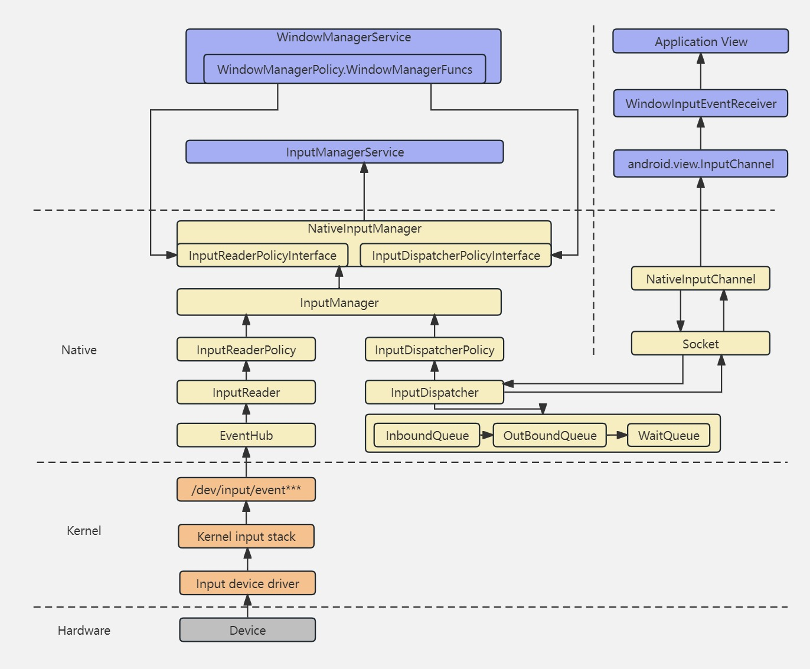
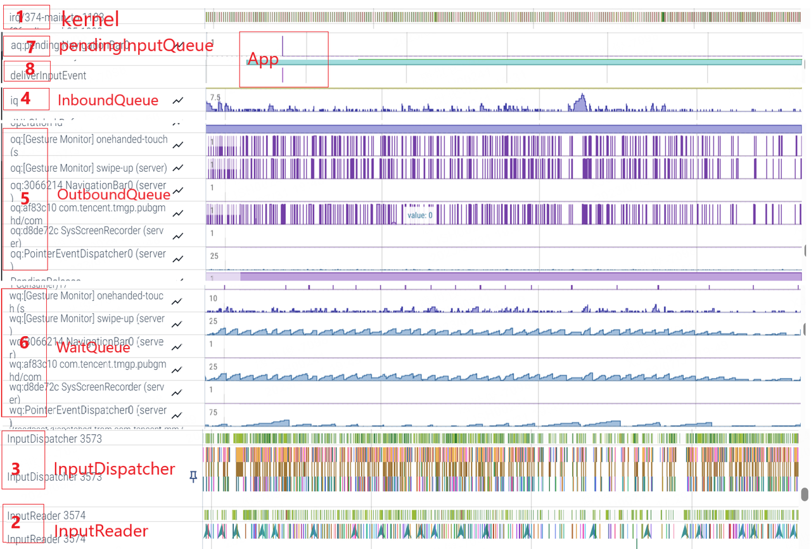
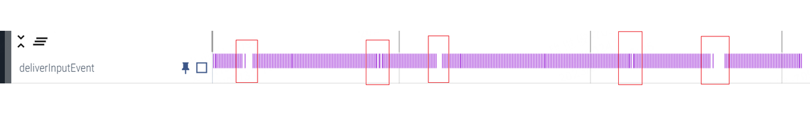
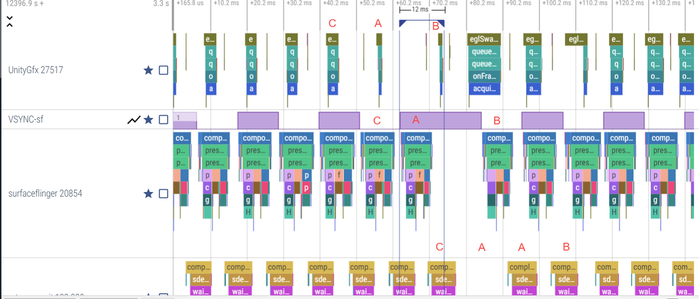
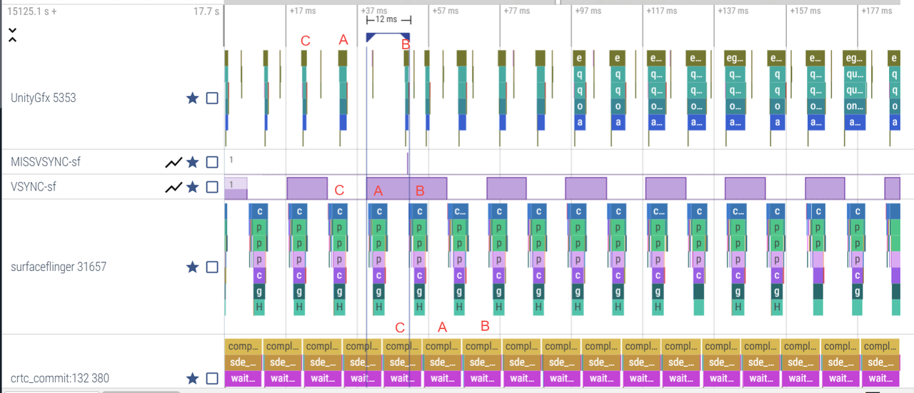
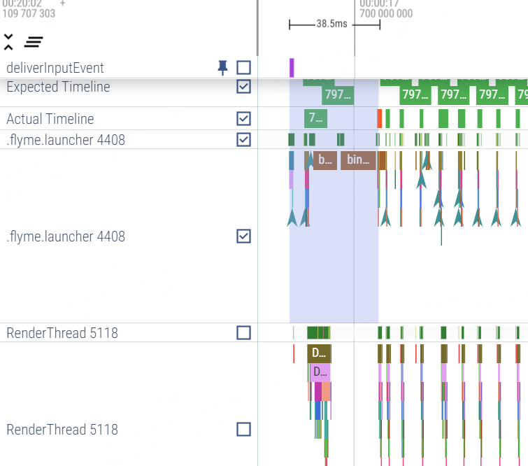
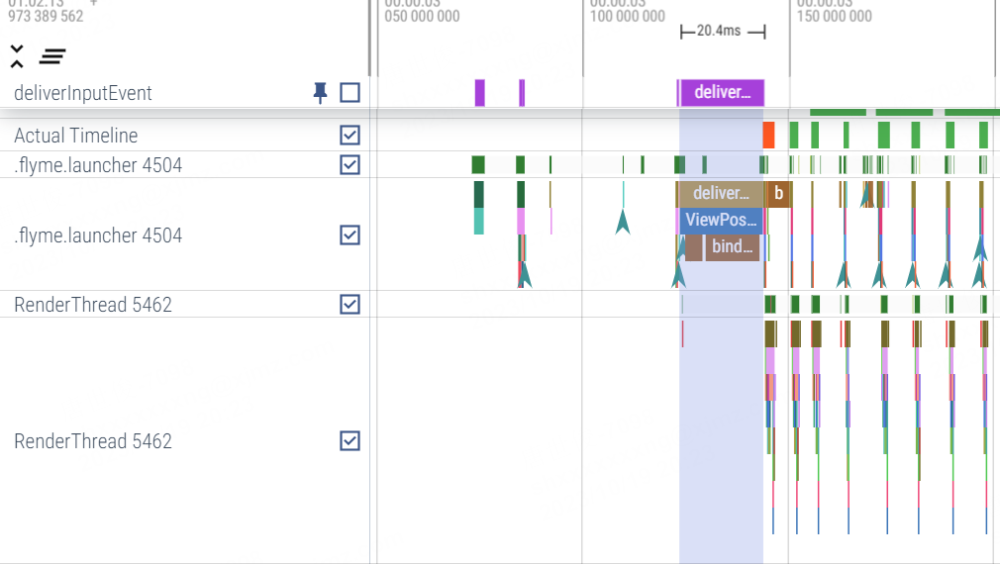

Android input系统负责处理与管理用户输入， 是用户交互体验的中枢，涉及从上到下各个领域。当遇到一些复杂的 Input 相关性能问题时，如何进行精准的 Debug 定位呢？本篇旨在介绍android Input的工作流程及debug手段，并借助perfetto工具，分享一些 Android Input Debug 与优化的实践和相应的优化方案。
一. Android input 常用debug 手段
1.1 底层
“adb shell getevent“ 命令可以获取Android kernel层上报到/dev/input/目录下的原始数据, 确定驱动层是否能正常的生成数据。
“adb shell input keyevent key-value” 可以模拟进行按键的点击，将点击事件直接通过InputDispatcher的injectInputEvent方法发送到Native层，若这边有问题表示InputDispatcher的拦截和分发存在问题。
1.2 上层
“adb shell dumpsys input“ 可以输出一些input系统运行时的一些信息，比如关键字RecentQueue，记录了10条最近的Input事件信息。还有诸如PendingEvent，InboundQueue，Windows，Connections等信息。
“adb shell setprop sys.inputlog.enabled true“ 打开native 层log。去确认是否有底层是否是事件上报？native 层是否drop 了事件？ 等等怀疑点。如果有需要， 也可打开以下log开关：
1 | // frameworks/native/services/inputflinger/reader/Macros.cpp |
- 开启ViewRootImpl/View/ViewGroup中input event的处理过程的log开关。 去确认以下怀疑点：Input 事件传递到了哪个window？ 有没有被正确的view处理？有没有被drop?等等。
1 | //frameworks/base/services/core/java/com/android/server/wm/WindowManagerDebugConfig.java |
以上都需要动态或者静态的打开Log 开关，通过log 来分析定位。但是对于一些偶现复杂的问题， log就会很大，分析起来很困难。
因此本篇推荐使用perfetto trace来分析定位复杂的android Input 问题，主要基于以下优点：
抓取方便，相对于log对系统性能影响很小；
相对于Log 更直观，分析起来更容易。
Perfetto 抓取的信息更全面，定位更精准。
二. Android input 传递流程
当用户进行触摸、按键等操作时，硬件会产生相应的事件，这些事件经过内核的输入子系统处理后，会被传递给 Android 系统的 Input 系统。然后再由 Input 系统将事件分发给对应的应用程序处理。在这个过程中，会涉及到事件的传递、分发、处理等多个环节，任何一个环节有问题，都会引入bug或性能问题。
2.1 Android input 传递流程
Android input 事件的整体传递流程见下图。

2.2 perfetto trace 上 input 工作流
perfetto trace 包含的信息很丰富，怎么在浩如烟海的信息中寻找input的关键脉络呢？ 如下图：

按上图中序号，具体流程如下：
底层产生一个Input事件，通过中断通知cpu,cpu 响应中断并通知驱动去处理，kernel 往/dev/input/event** 写数据。
InputReader 调用EventHub的 getEvents() 方法接收底层事件，把从/dev/input/event** 中读取的raw event (struct input_event) 转成 android event (keymap/layout) ，然后交给 InputDispatcher 进行事件分发。
InputDispatcher 拿到 InputReader 获取的事件之后，对事件进行包装和分发。
InputDispatcher 执行 notifyKey 的时候，会将 Input 事件封装后放到 InboundQueue 也就是“iq”队列中，后续 InputDispatcher 循环处理 Input 事件的时候，就是从 InboundQueue 取出事件然后做处理。
InputDispatcher 找到target window后，将事件放入对应的target window OutboundQueue也就是“oq”队列中等待通过SocketPair双工信道发送到Target window。这里的 OutboundQueue 指的是要被 App 拿去处理的事件队列，每一个 App(Connection) 都对应有一个 OutboundQueue ，事件会先进入 InboundQueue ，然后被 InputDIspatcher 派发到各个 App 的 OutboundQueue。
InputDispatcher把事件发送给具体的Target window后，会将事件从outboundQueue 中取出来放到WaitQueue也就是“wq”中，等待目标应用处理事件完成。并开启倒计时，如果超时，就会上报应用ANR异常事件。当分发出去的事件被处理完成，InputManagerService 就会从应用中得到一个回复，这里面会通过JNI通知InputDispatcher事件处理完成，此时就会移除 WaitQueue 中的事件，以免报ANR异常，从perfetto中看就是对应 App 的 WaitQueue 值减少了1。如果app主线程发生卡顿，那么 Input 事件没有及时被消耗，WaitQueue 这里就会看到堆积。
当input触控事件传递到App进程后，先通过enqueueInputEvent函数放入“aq”本地待处理队列中。
应用的UI线程在deliverInputEvent的流程中进行input事件的具体分发与处理。
下面是跟踪 InboundQueue， OutBoundQueue ，WaitQueue的源码，可以据此查询调用的地方。
1 | void InputDispatcher::traceInboundQueueLengthLocked() { |
三. Android input debug与优化实践
3.1 input关键线程调度优化
在某游戏界面滑动卡顿，偶现不跟手。app 侧在trace 上发现应用DeliverInputEvent 有时候没收到（见下图），app侧怀疑是TP报点异常。

这个input 事件到底是底层没上报，还是中间传递卡住了呢？只需要弄清楚在input 链路上到底是卡在哪里，也就明白了问题所在。在trace上查看整个input链路，发现有两点异常（如下图）。1，InputReader 由于长时间runnable 没有及时去读取底层的事件；2，InputDispatcher 由于长时间runnable 没有及时的将事件分发出去。在input 链路中任何一步处理不及时，都会导致最终的响应不及时。

在游戏场景下，Tp报点率比较高，对InputReader 和InputDisaptcher 等线程的调度及时性要求比较高，修改相关线程的调度策略后，测试实测改善很大，perfetto trace 截图如下。

3.2 减少帧的上屏时间
在触控操作中，有时会发现应用程序提交当前帧的时间刚好错过了一个VSync周期，就得等待下一个VSync周期的到来，中间这段时间是闲置的。如下图。

尝试这么优化：当应用提交当前帧给SurfaceFlinger的时间减去上一次SurfaceFlinger唤醒的时间超过了1个VSync周期，小于3/2个周期时，直接通知SurfaceFlinger进行Message处理，最优时候可以节约出1帧时间。无论对于响应时间还是帧率的稳定性，效果都有提升。优化后trace 截图如下：

3.3 点击桌面图标响应时间优化
在桌面点击图标启动应用，响应时间较对比机差。最初抓log 分析没发现问题点。借助强大的perfetto抓取 trace，我们发现点击之后，应用没有立即执行点击事件，等了几帧之后才执行。如下图。原来android为了UI界面的一致性与连贯性，将点击事件发送到消息队列中，待其他视觉状态更新之后才执行点击操作。

尝试修改成立即执行点击事件后，最优有2~3帧的收益，如下图。当然这是非通用改法，需要对side effect做bug fix。

3.4 其他
Tp 固件优化，减少Tp 休眠时间， 提高采样率，当然这会带来功耗的增加， 需要针对场景来做动态的改变。
提高屏幕刷新率。
改善控件的响应，提高感知触控的敏感性。包括：修改滑动控件的阀值、调低摩擦力系数和样条滑动持续时间等参数，以及调整view的触摸区域等等。
其他。
This is copyright.